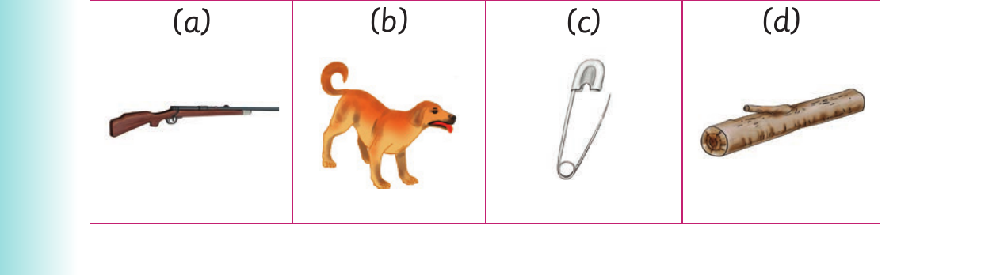

Unit Two: Letter sounds

Letter sounds. I know the two things. One is a cup. The other is a cap. Wow! Fantastic! I also know a cup and a cap.
I use different sounds to form new words
I use different sounds to form new words.
Activity 1
1. Pronounce the following words: pin bin run gun mend bend log dog

2. Name the following pictures. (a) (b) (c) (d)